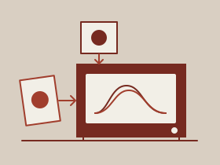
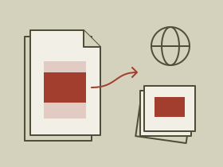
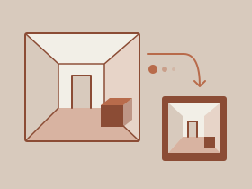
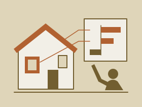
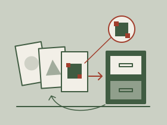

Research Projects
Publications, preprints, and unpublished student research work.
-
-
Unpublished
PyTorch vs. JAX: Automatic Differentiation Performance on Scientific Codes
Baraq Lipshitz, Jonas Mirlach, Amin Oudrhiri, Gerald Prendi, Leyla Yaayladere
We compared reverse-mode automatic differentiation in PyTorch and JAX, examining how computational patterns affect performance on scientific workloads across CPUs and GPUs.
-
IEEE/CVF International Conference on Computer Vision (ICCV)
R-LiViT: A LiDAR-Visual-Thermal Dataset Enabling Vulnerable Road User Focused Roadside Perception
Jonas Mirlach, Lei Wan, Andreas Wiedholz, Hannan Ejaz Keen, Andreas Eich
We created a roadside dataset combining LiDAR, RGB and thermal recordings, with a focus on detecting pedestrians and cyclists during day and night.
-

UnpublishedEvaluating Apertus Models for Multilingual Legal Headnote Generation
Kaushik Karthikeyan, Jonas Mirlach, Max Neuwinger
We evaluated fine-tuning approaches for Apertus models to generate headnotes for Swiss court decisions, examining summary quality across German, French and Italian.
-
Unpublished
Feed-forward Dynamic Scene Reconstruction with Humans Using Gaussian Splatting
İrem Demir, Emircan Gündoğdu, Jonas Mirlach
We developed a Gaussian splatting approach to reconstruct people and their surroundings from monocular video, with a human representation that supports reposing.
-

UnpublishedUncertainty Guided Knowledge Distillation for Monocular Depth Estimation
Tengerleg Enkhtuvshin, Jonas Mirlach, Iaroslava Novoselova, Piotr Wilczyński
We tested whether filtering uncertain teacher predictions helps smaller models learn to estimate depth from a single image through knowledge distillation.
-

Energy and BuildingsLeveraging Explainable AI for Informed Building Retrofit Decisions: Insights from a Survey
Daniel Leuthe, Jonas Mirlach, Simon Wenninger, Christian Wiethe
We examined how people understand explanations of building energy predictions, comparing machine learning models and explanation methods through a survey of 137 participants.
-

-
-
Conference on Production Systems and Logistics (CPSL)
Enabling the Smart Factory: A Digital Platform Concept for Standardized Data Integration
Julia Donnelly, Andreas John, Jonas Mirlach, Kilian Osberghaus, Silvia Rother, Christian Schmidt, Hannes Voucko-Glockner, Simon Wenninger
We designed a platform concept for providing manufacturers with standardised data integration modules, drawing on literature and interviews with industry experts.